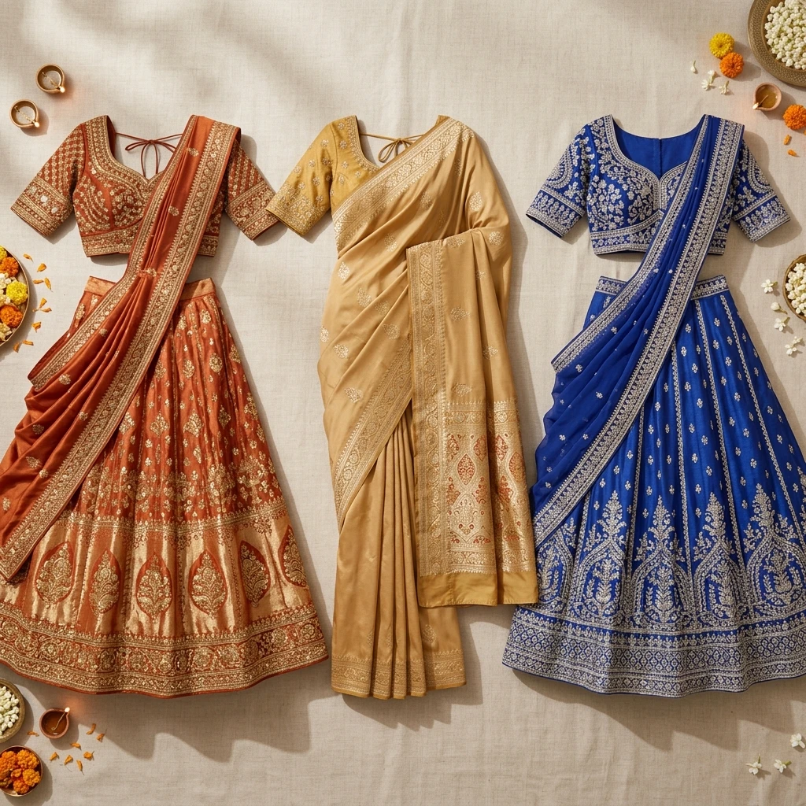
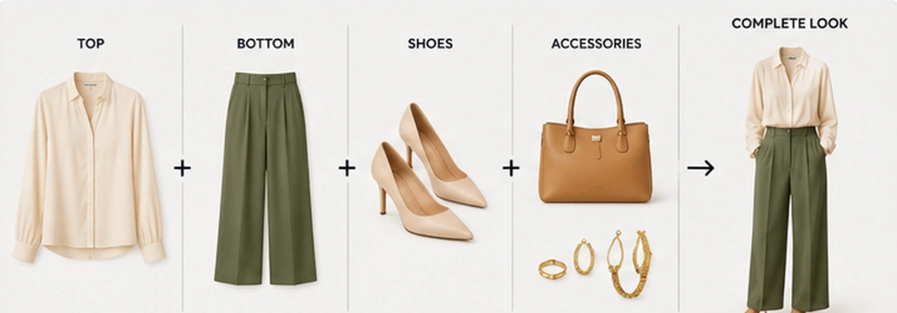
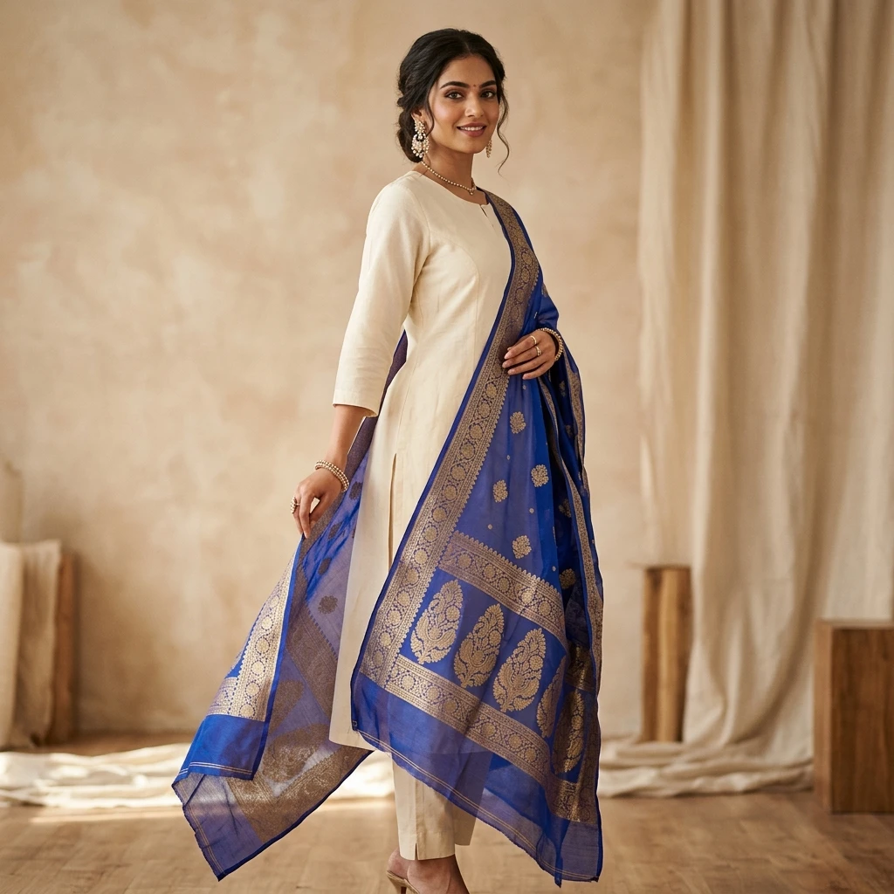

Your Outfit Planner Starts With Your Wardrobe
Colourity's Outfit Planner does not generate theoretical outfit ideas out of thin air. It operates directly on the clothes saved in your personal digital wardrobe, matching your real tops, bottoms, footwear, and accessories.
Don't have your closet added yet? Start by building your Digital Wardrobe →
What Is an AI Outfit Planner?
Definition
An AI outfit planner is a digital styling system that evaluates available clothing items and pairs them into complete, coordinated outfits based on styling parameters including skin tone colour harmony, occasion context, formality levels, weather conditions, and personal preferences.
How does an AI outfit planner work?
It analyzes the attributes of each garment—category, colour tone, pattern, formality, and fabric—and computes compatible top-to-bottom combinations for specific styling needs.
Can it use clothes I already own?
Yes. Unlike generic shopping apps that push new items, Colourity's AI outfit planner builds looks directly from your uploaded digital closet inventory.
What factors influence a recommendation?
Key inputs include skin undertone harmony, occasion formality (work, casual, festive), weather parameters, pattern contrast, and piece availability.
Generic Outfit Inspiration
"Here is an outfit from a magazine or store." Unconnected to what you actually have hanging in your bedroom closet.
Colourity AI Outfit Engine
"Here is an outfit you can wear today using your existing clothes." Built from your digitised wardrobe inventory.
Three Ways to Get an Outfit
Whether you want full control over a specific staple item or a zero-effort recommendation, Colourity offers three distinct modes:
Outfit Wizard
Pick a starting base garment (e.g., your beige trousers) and an occasion. Colourity builds a complete look around it.
When you know one item you definitely want to wear today and need compatible pairings.
Gives you total control over the hero piece while solving matching shoes and layers.
Surprise Me
Generates a complete, weather-aware outfit suggestion from your wardrobe with a single tap.
When you suffer from morning decision fatigue and don't want to build a look manually.
Discovers forgotten clothing combinations in your closet instantly.
Today's Pick
Surfaces a daily curated recommendation directly on your app home screen.
Every morning as your default starting point for getting dressed.
Builds a seamless daily dressing routine with option to log what you wore.
How Colourity Builds a Look
When you request an outfit recommendation, Colourity evaluates your entire digital wardrobe inventory and evaluates piece-by-piece compatibility—combining top, bottom, shoes, and accessories into one cohesive look.

The system evaluates color depth, undertone harmony, pattern scale, and formality tiers across all categories to ensure every item in the outfit works in harmony.
Why the Recommendations Are Consistent
Colourity relies on deterministic colour-science and matching rules computed from garment attributes—such as skin tone contrast ratios, formality levels, and pattern compatibility—rather than generating random combinations.
Skin Undertone Harmony
Ensures outfit colours complement your biological seasonal palette.
Formality Matching
Prevents pairing formal blazers with casual athletic wear.
Weather Context
Factors temperature and season into garment selection.
Wardrobe Availability
Builds looks strictly from available clothing in your closet.
Occasion & Weather Aware Recommendations
Different situations require different outfit choices. An everyday casual look, a professional office presentation, a festive wedding function, or a cold morning commute each draw on distinct garment combinations matched to the appropriate formality tier and weather context.
Explore Outfits & Styles
Beyond building outfits on demand, Explore Outfits & Styles allows you to browse complete outfit lookbook inspirations across ethnic, casual, smart-casual, and formal directions. Hotspots on individual pieces allow you to see the component tops, bottoms, and outerwear that make up each look.

A Practical Example
1. STYLING CONTEXT & WARDROBE INPUTS
Context: Smart-Casual Office Event
Available Wardrobe:
- 👔 Navy Shirt
- 👖 Beige Chinos
- 👞 Brown Loafers
- ⌚ Watch & Leather Belt
2. COLOURITY AI OUTCOME
Navy Shirt + Beige Chinos + Brown Loafers = Polished Smart-Casual Look
WHY IT WORKS
- ✓ Balanced colour contrast (Deep Navy & Warm Neutral Chinos)
- ✓ Consistent smart-casual formality across shirt and footwear
- ✓ Brown accessories add warmth and visual cohesion
- ✓ Suitable for a polished office setting or dinner event
Note: This practical example demonstrates the workflow system logic—it is an illustrative demonstration rather than a guarantee that this exact combination will be recommended for every user.
Part of a Connected Personal Styling Ecosystem
The AI Outfit Planner connects seamlessly with the rest of the Colourity platform to make dressing effortless:
1. YOUR COLOURS
Know which colours suit your skin tone →
2. YOUR WARDROBE
Know what clothes you already own →
3. AI OUTFIT PLANNER
Know what to wear every day
4. SCAN BEFORE YOU BUY
Know whether new items fit →
Outfit Planning FAQs
An AI outfit planner is a personal styling system that combines available wardrobe pieces into complete, coordinated outfits based on styling context, such as occasion, weather, colour harmony, and personal preferences. Colourity's Outfit Planner builds these combinations directly from your own digitised wardrobe.
An AI outfit planner evaluates clothing attributes—category, colour tone, pattern, formality, and fabric—and applies colour-science rules to assemble compatible items into full looks tailored to your specific occasion or daily style needs.
Yes. Colourity is specifically designed to generate outfits from clothes you already own. Once you upload your items into your digital wardrobe, Colourity recommends looks using your actual closet inventory.
Colourity combines your personal colour profile, digital wardrobe inventory, selected occasion context, and weather inputs to match tops, bottoms, shoes, and layering pieces into harmonious outfit combinations.
Outfit recommendations are influenced by skin tone colour harmony, item formality level, occasion, weather conditions, pattern compatibility, and available wardrobe inventory.
Colourity uses deterministic colour-science and matching rules—colour harmony, pattern compatibility, and formality tiers computed from your garments' attributes—rather than generating a random guess each time. This creates consistent, explainable recommendations.
Yes. The Outfit Wizard lets you choose a base garment and an occasion (such as work, casual, or festive), and Colourity builds a compatible outfit from your available wardrobe.
Yes. For features like Surprise Me, Colourity factors in current weather conditions so it doesn't suggest heavy outerwear on a hot day or light sleeveless pieces in cold weather.
Found a Gap in Your Wardrobe?
If an outfit recommendation highlights a piece you don't own, evaluate potential new purchases with Scan Before You Buy to make sure every new addition pairs with your existing wardrobe.
See how Scan Before You Buy worksRelated Masterclass Guides
Plan Your Outfits Effortlessly
Download Colourity on Android to get started for free.
Get Colourity App